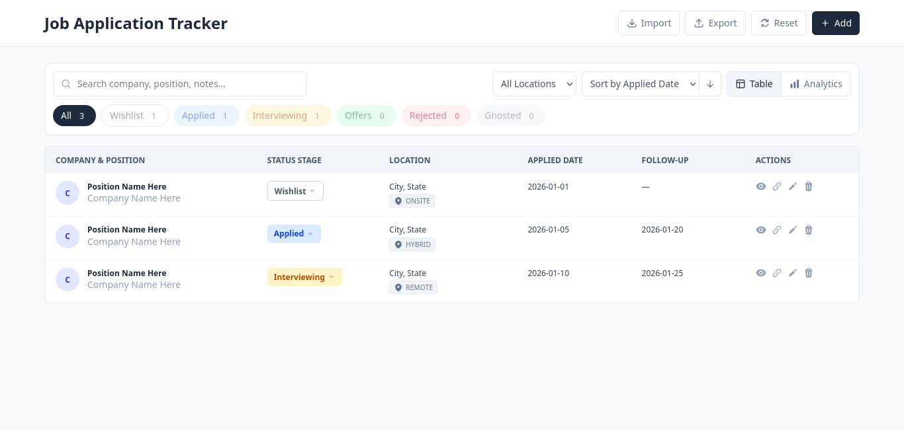
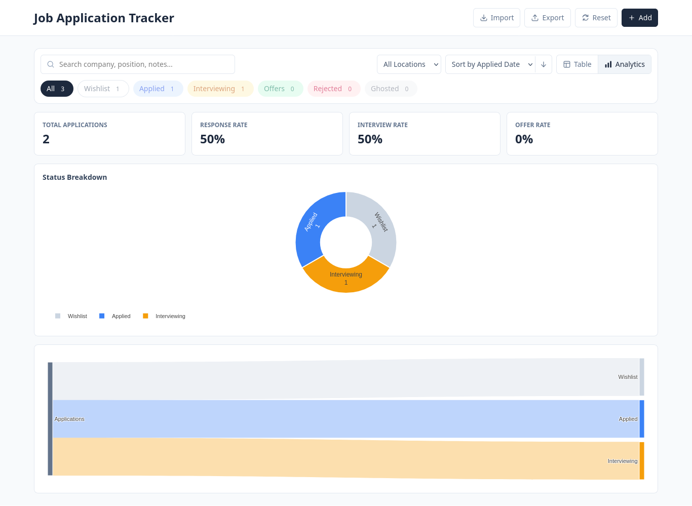

A browser-based job application tracker with status stages, search and filtering, and an analytics dashboard that visualizes the funnel from application to offer. All data stays local — no account, no backend, no database.
Preview

Table View

Analytics View
Features
Data Storage
Everything is saved locally in your browser's storage — no account, no cloud, no database. Nothing is ever sent to a server.
Try It
No install, no signup — open the link and start tracking.